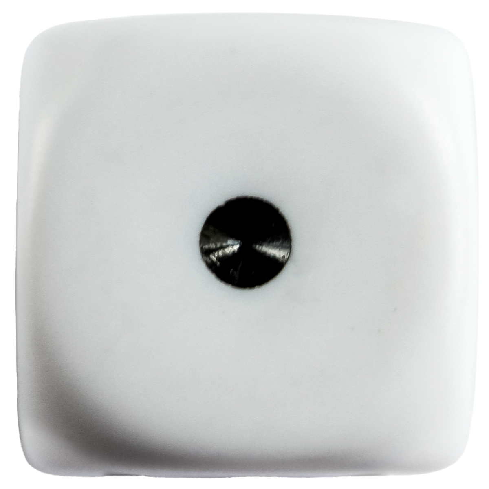
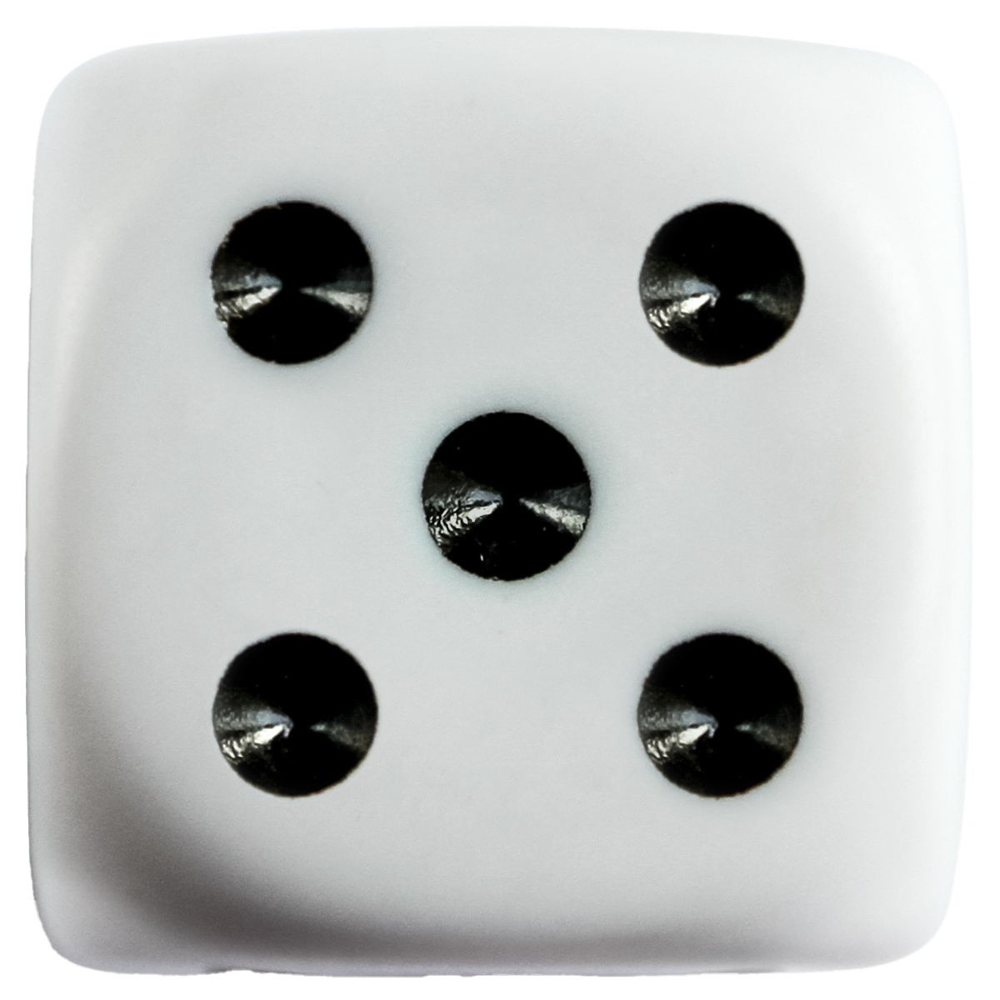
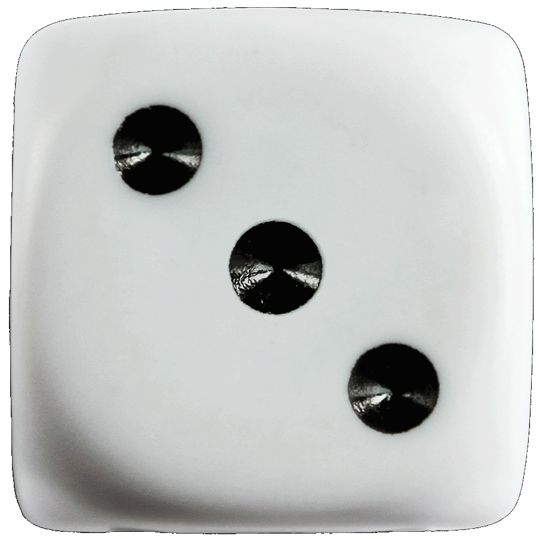
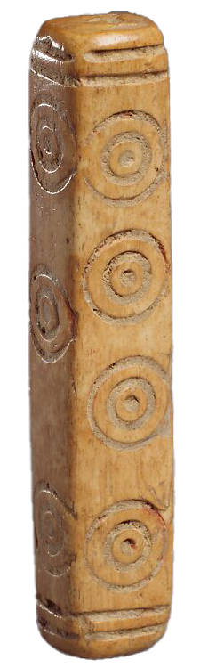
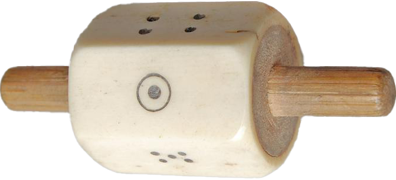
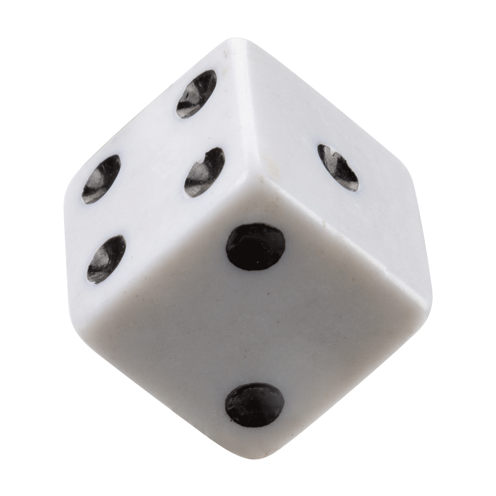

Bone
Egypt, Thebes
1550–1458 BC


Carved Gabbro
Egypt
304–30 BCE
Glass
Greece
3rd–2ndC BCE
Bronze
Greece or Rome
3rd-2ndC BCE
Ivory Throw Stick
Egypt, Thebes
1400–1295 BCE


Ivory Throw Stick
Egypt, Thebes
1400–1295 BCE


Bone
Sweden
2ndC-3rcC BCE


Limestone
Egypt
6thC BCE–6thC CE
Bone; incised
Iran, Nishpur
9th–10thC CE
Engraved bronze
Iran, Kirman
Year N/A
White stone
Egypt
30 BC–364 CE
Bone; incised
Iran, Nishpur
9th–10thC CE
Ivory
Egypt, Oxyrhynchus
30 BCE–330 CE


Ivory
Egypt, Fustat
Before 1200
Bone; incised
Iran, Nishpur
9th–10thC CE
Iron pyrite
Greece, Dodecanese
Year N/A
Bone; incised
Iran, Nishpur
9th–10thC CE
Sone
Egypt
Year N/A
Rock crystal
Greece
1stC–2ndC CE


Wood
Greece
Year N/A
White faience
Egypt
332–30 BCE
Serpentinite
Egypt
30 BC–364 CE
Limestone
Egypt
6thC BCE–6thC CE
Bone
England, London
43–410 CE
Lead
Egypt
7thC BCE–3rdC CE

Ivory
Egypt, Oxyrhynchus
30 BCE–330 CE

Limestone, red paint
Egypt, Naukratis
6thC BCE–6thC CE


Faience
Egypt
2ndC BCE–4thC CE
Faience
Rome
2nd–3rdC CE

Greenstone
Greece
2nd–1stC BCE
Serpentinite
Egypt
2ndC BCE–4thC CE

Ivory
Pakistan or Afghanistan
1st–3rdC CE

Bone & wood
Borneo, Sarawak
19thC-20thC CE

